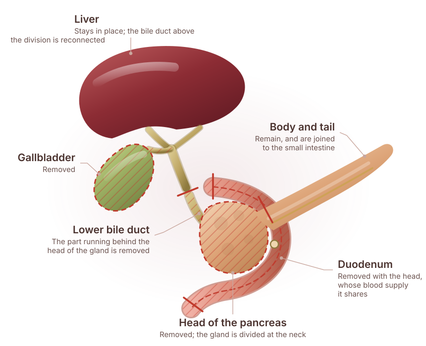

Painless jaundice
Yellow eyes or skin with dark urine and pale stools, often without pain — assess promptly.
Specialist surgical evaluation for pancreatic cancer, including the Whipple procedure and surgery involving the vessels around the pancreas.
Send your reports before you travel — they are reviewed ahead of the consultation.

The pancreas lies deep in the upper abdomen, behind the stomach. It makes the enzymes that digest food and the hormones, including insulin, that control blood sugar. It is divided into a head, which sits in the loop of the duodenum, a body across the midline and a tail reaching the spleen.
Where a tumour sits in the pancreas changes both the symptoms and the operation. A growth in the head can press on the bile duct and cause painless jaundice relatively early. A growth in the body or tail can grow for longer before it announces itself, often with back pain or weight loss.
Pancreatic surgery is complex because of what surrounds the gland: the major blood vessels supplying the intestine and the liver run immediately behind it. Whether those vessels are involved is one of the main things the staging scan is looking for.
Early pancreatic symptoms are vague and overlap with common conditions. Persistence is what makes them worth investigating.
Yellow eyes or skin with dark urine and pale stools, often without pain — assess promptly.
Significant weight loss with no change in diet or activity.
A dull ache in the upper abdomen going through to the back, sometimes worse lying flat.
Feeling full quickly, or losing interest in food.
Diabetes appearing for the first time in later life, particularly with weight loss.
Pale, greasy stools that are difficult to flush, suggesting fat is not being digested.
These symptoms have many possible causes and do not, on their own, mean pancreatic cancer. Most people who have them turn out to have something else entirely. What they do mean is that a symptom which persists deserves a proper medical evaluation rather than a wait — this page is not a way to diagnose yourself.
One question runs through the whole work-up: is the tumour separable from the blood vessels behind the pancreas? A pancreatic protocol CT is what answers it.
Which tests apply to your case is a clinical decision made after you have been examined and your existing reports reviewed.
Symptoms, their timeline, new diabetes and any family history are reviewed.
Liver function tests and, where relevant, the CA 19-9 tumour marker as one piece of the picture.
A dedicated contrast CT shows the tumour and, critically, its relationship to the surrounding blood vessels.
Endoscopic ultrasound allows close assessment and a biopsy where tissue confirmation is needed.
The disease is classified as resectable, borderline resectable or locally advanced, which determines what is offered first.
Treatment for pancreatic cancer depends on the stage, the position of the tumour, whether nearby blood vessels are involved, and your fitness for a major operation. These factors are assessed together, not in isolation.
Some patients are advised to have chemotherapy before surgery, particularly where the tumour is borderline resectable, with the aim of improving what an operation can achieve. Others go to surgery first. Chemotherapy after surgery is commonly part of the overall plan.
Where an operation is not appropriate, treatment focuses on controlling the disease and relieving symptoms — including stenting a blocked bile duct, managing pain and supporting nutrition. That is active treatment, not the absence of it.
No procedure is promised in advance of an assessment. What is appropriate for you is decided after examination and a review of your investigations.
Not every pancreatic tumour can be removed, and an honest assessment of that is the most important part of the first consultation. Where surgery is appropriate, the operation is chosen by the part of the gland involved.
Pancreatic surgery is centralised around experience for good reason: the operations are long, the reconstruction is delicate and the post-operative period needs close attention.
Pancreaticoduodenectomy
The operation used for tumours in the head of the pancreas — the part of the gland where the pancreas, the bile duct and the first part of the small intestine all meet.
A Whipple procedure is one operation with two halves. In the first, the head of the pancreas is removed together with the structures immediately attached to it. In the second, the organs that remain are joined to the small intestine again, so that food, bile and pancreatic enzymes can pass as they did before.
It is considered where a tumour sits in the head of the pancreas, or in the structures that drain through it, and the staging assessment suggests it can be removed completely. Removing the tumour with a clear margin is the purpose of the operation; that judgement is made on the scans, not on symptoms.
The head, and the neck of the gland next to it — the portion that sits inside the C-shaped loop of the duodenum. Tumours of the body or the tail are dealt with by a different operation, a distal pancreatectomy, because that part of the gland has different neighbours.
The pancreas shares its blood supply with the bowel and lies against the vessels that feed the liver and the intestine. Whether those vessels are involved decides whether the operation is possible, and how it would be done. That assessment, and the reconstruction that follows the removal, are what make this specialist surgery.
What is removed in any individual case is decided by the disease and by what is found at operation. Nothing here is a description of your operation until a surgeon has assessed you.
The head of the pancreas cannot be taken out on its own. It shares its blood supply and its drainage with the organs around it, so they come out together.

Once the specimen is out, three connections are made to the small intestine: the remaining pancreas, the bile duct above the division, and the stomach. That reconstruction is what allows digestion to continue, and it is the part of the operation that takes the most care.
Whether more than this is removed — for example a length of vein where a tumour touches it — depends on the individual case and is discussed before the operation.
Five stages, each of which has to be completed before the next one is considered. A Whipple procedure is not offered at a first appointment; it is arrived at.
Your history, examination and staging imaging are reviewed together with your general fitness for a major operation.
Whether surgery comes first, or chemotherapy first with reassessment afterwards, is decided with the oncology team and explained to you before anything is agreed.
The head of the pancreas, the duodenum, the gallbladder and the lower bile duct are removed together with the surrounding lymph nodes.
The remaining pancreas, the bile duct and the stomach are joined to the small intestine so that digestion can continue.
Monitored recovery in hospital, then nutrition, enzyme and blood sugar support, and the follow-up plan for the disease itself.
It is considered for selected conditions of the head of the pancreas and the structures beside it, where the assessment shows the disease can be removed completely.
Where staging shows the tumour is separable from the blood vessels behind the gland.
Growths of the lower bile duct, the ampulla or the duodenum drain through the same point and may be treated by the same operation.
Some cysts and some complications of chronic pancreatitis affecting the head of the gland are treated surgically after assessment.
Not every pancreatic cancer patient requires a Whipple procedure. Whether an operation is appropriate at all, and which operation it would be, depends on where the disease sits, its stage, whether the surrounding vessels are involved and whether you are well enough for the recovery that follows. Some patients are advised chemotherapy first and reassessed; for others, treatment that controls the disease and relieves symptoms is the better course. That decision is made on your individual clinical evaluation.
Recovery is planned as part of the operation, not after it. What it looks like in your case is discussed with you beforehand.
A monitored stay while the reconstruction settles, with pain relief, mobilisation and a gradual return to eating.
Dietary support, smaller and more frequent meals at first, and pancreatic enzyme supplements where digestion needs the help.
The gland makes insulin as well as enzymes, so blood sugar is checked and managed as part of recovery.
Wound and recovery review, the pathology result from the specimen, and what it means for the rest of the treatment plan.
Chemotherapy after surgery where it is advised, planned with the oncology team rather than arranged afterwards.
Activity, work and travel are built back gradually. A realistic timeline for your situation is given by your surgeon, because it depends on the operation and on you.
No fixed recovery period is promised here. A Whipple procedure is major surgery: the hospital stay is measured in days to weeks and the recovery in weeks to months, and where you fall within that depends on your operation and your health. Your surgeon will give you the picture that applies to you.
The procedures this unit performs, and the training behind them. Nothing is listed here that is not part of the surgeon's verified practice.
Surgical assessment and resection for cancers of the pancreas, including distal pancreatectomy and total pancreatectomy where the disease requires it.
Pancreaticoduodenectomy for tumours of the head of the pancreas and of the structures that drain through it.
Vascular resection and reconstruction where a tumour abuts the portal or superior mesenteric vein, and surgery for chronic pancreatitis and pancreatic cysts.
Hepato-pancreato-biliary surgery across the liver, bile ducts and gallbladder, including minimally invasive and robotic approaches in selected patients.
Robotic pancreatic surgery fellowship, Tokyo; laparoscopic pancreatic surgery, Beaujon Hospital, Paris.
Research and practice in portal vein resection performed alongside pancreatectomy.
Outstation patients can send scans ahead so the first visit is a decision.
Chemotherapy sequencing planned with the treating team, not after the fact.

Pancreato-Biliary & Gastrointestinal Surgery
Dr. Deeksha Kapoor is a pancreato-biliary and gastrointestinal surgeon with training in advanced surgical oncology and minimally invasive surgery, from institutions in India, Japan, Germany and France. She leads the PancreaCare+ programme at Advitya Healthcares.
Pancreatic cancer surgery is the centre of this practice: a robotic pancreatic surgery fellowship in Tokyo, HPB training at Heidelberg, laparoscopic pancreatic surgery at Beaujon in Paris, and published research on vascular resections performed with pancreatectomy.
From the first consultation through to follow-up, so you know what each stage involves before you commit to it.
Symptoms, jaundice, weight loss and new diabetes, with any imaging you already have reviewed on the spot.
Pancreatic protocol CT, and EUS with biopsy where tissue confirmation is needed.
Resectable, borderline resectable or locally advanced — the category that determines what comes first.
Surgery first, or chemotherapy first and reassessment, decided with the oncology team.
Whipple procedure, distal pancreatectomy or total pancreatectomy, with vascular reconstruction where required.
Nutrition, enzyme replacement, blood sugar and adjuvant chemotherapy planned as one package.
Advitya Healthcares works through alliance partners in Ranchi, Khunti and Kolkata, so treatment is delivered close to home wherever possible.
Pancreatic cancer is a growth that starts in the pancreas, the gland behind the stomach that makes digestive enzymes and the hormones that control blood sugar. It can arise in the head, the body or the tail of the gland, and where it sits changes both the symptoms it causes and the operation that would be considered.
No. Whether an operation is possible depends on the stage and on whether the tumour involves the blood vessels behind the pancreas. A dedicated pancreatic protocol CT is what answers that question.
It is the operation for tumours in the head of the pancreas. The head of the pancreas, the duodenum, the gallbladder and the lower bile duct are removed together, and the remaining organs are then joined to the small intestine so digestion can continue.
It is performed to remove a tumour of the head of the pancreas, or of the structures that drain through it, completely and with a clear margin. Because those structures share a blood supply, they have to be removed together rather than separately.
The head of the gland, and the neck beside it — the part that sits inside the C-shaped loop of the duodenum. Tumours of the body or the tail are treated by a different operation, a distal pancreatectomy.
No. Not every pancreatic cancer requires or allows a Whipple procedure. Suitability depends on where the disease sits, its stage, whether the surrounding blood vessels are involved and whether you are fit for a major operation and its recovery. Some patients are advised chemotherapy first and reassessed afterwards.
Through a specialist consultation and examination, blood tests including liver function and, where relevant, the CA 19-9 marker, a pancreatic protocol CT scan, and endoscopic ultrasound with a biopsy where tissue confirmation is needed. The disease is then classified as resectable, borderline resectable or locally advanced, which is what determines the treatment plan.
Your symptoms and their timeline are reviewed, you are examined, and any scans or reports you already have are looked at during the appointment. You are told what is known so far, what further investigation is needed, and what the realistic options are. No procedure is committed to before that assessment.
On the type of disease, its position, its stage, your overall condition and the specialist assessment together. Surgery, chemotherapy and radiotherapy each have a place depending on those factors, and the sequence is planned with the oncology team rather than decided one step at a time.
For borderline resectable tumours, treatment first can shrink the tumour away from nearby vessels and gives time to see how the disease behaves. Whether that applies to you is a staging decision.
In selected patients, yes. The approach depends on the tumour, its position and your anatomy, and is chosen on safety grounds rather than as a default.
A monitored recovery in hospital while the reconstruction settles, a gradual return to eating with dietary support, pancreatic enzyme supplements where digestion needs them, blood sugar monitoring, and follow-up appointments that cover the pathology result and the rest of the treatment plan.
It depends on how much of the gland is removed and how the remaining pancreas works. Blood sugar and digestion are both monitored after surgery, and enzyme supplements are often needed.
A Whipple procedure is major surgery with a hospital stay measured in days to weeks and a recovery measured in weeks to months. Your surgeon will give you a realistic picture for your situation.
Your CT or MRI scans on disc rather than only the report, any biopsy or EUS results, recent blood tests including liver function and CA 19-9 if done, and a list of your medicines.
Yes. Reports can be reviewed before you travel so that the first consultation is a discussion of the plan rather than a first look at the scans.
Pancreatic decisions are made on the scan. Send your CT on disc before you travel — it is reviewed in advance, so the first consultation is about what can be done.
Medical disclaimer. The information provided on this page is for educational purposes only and should not be considered a substitute for professional medical advice, diagnosis or treatment. Treatment options may vary depending on individual clinical evaluation.